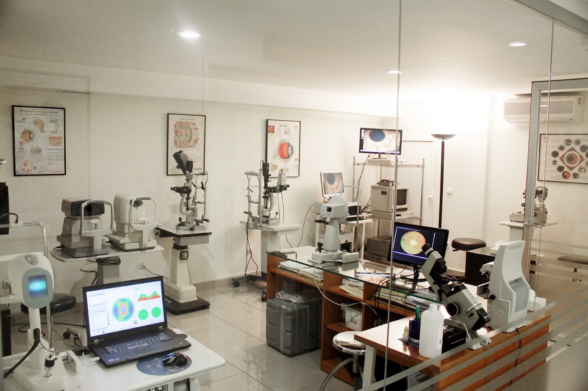

GLAUCO DTECT
Innovación tecnológica al servicio de tu visión, detectando el glaucoma con precisión y a tiempo.


Donde nuestro software se utiliza para mejorar los procesos de diagnóstico del glaucoma, evitando así un tardío diagnóstico y la probabilidad de ceguera.
Leer másColaborando estrechamente con especialistas para optimizar la funcionalidad y precisión de nuestra herramienta.
Leer másHacen un uso diario de nuestro software para hacer una validación de su efectividad frente a las otras opciones del mercado.
 Leer más